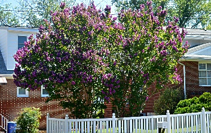
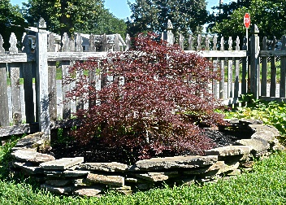
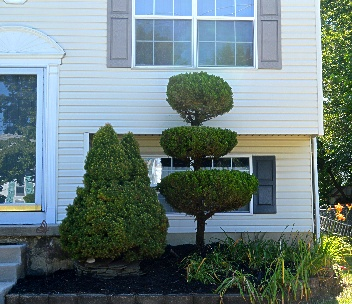
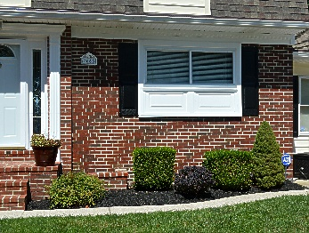
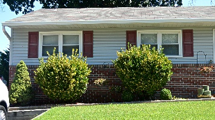
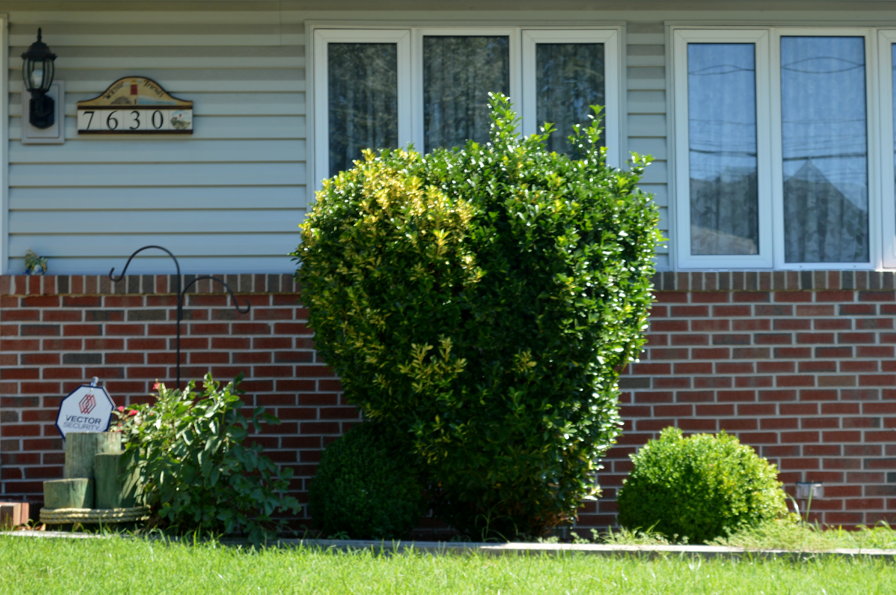

Tree and Bush Displays
Second Chance Gardens has established a variety of connections with local landscaping businesses and nurseries in the surrounding Pasadena, MD area. Our local business connections allow us to provide a wide variety of different tree and bush options to our senior clients. We find that some seniors prefer tree and bush displays instead of flower beds. Our organization understands that each client is unique and we aim to please them by offering a range of different yard options to our seniors.
| Samples from Previous Satisfied Customers | ||
|---|---|---|
| Purple Blossom Tree Display  |
Small Red Chinese Tree  |
Sculptured Tree and Bushes  |
| Assorted Bushes  |
Bulb Shaped Bushes  |
Ball and Cone Shaped Bushes  |
If you know a senior in need of some help or your a senior yourself that needs some help please contact us to talk to a representative and schedule an appointment